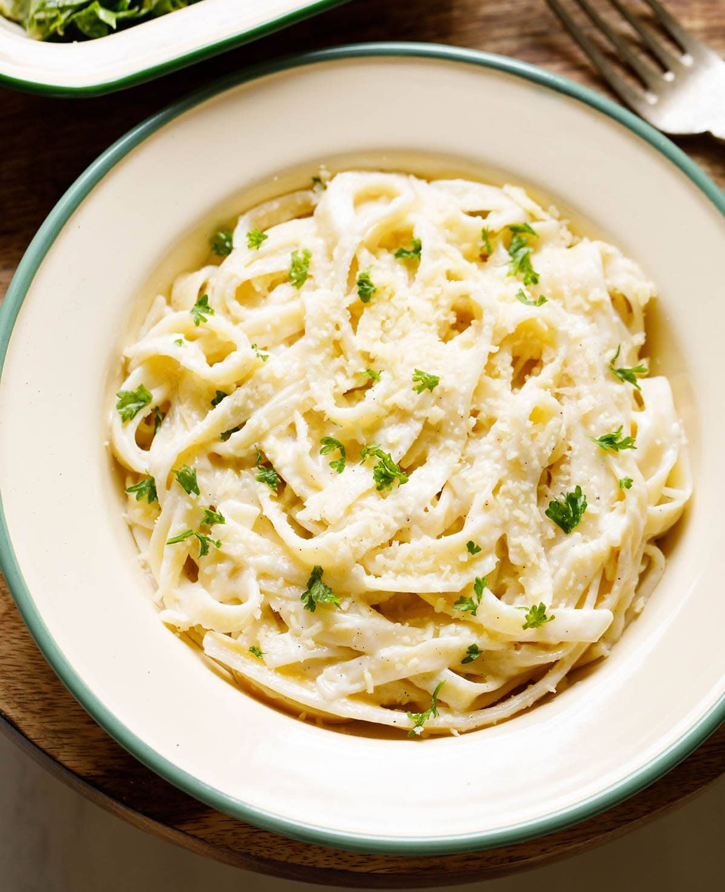

Alfredo Pasta

Description
Rich and creamy Fettuccine Alfredo is one of the easiest and most satisfying pasta dishes to make at home. Fresh cream is combined with parmesan cheese and butter to make a luscious Alfredo sauce in only minutes.It’s then tossed with your favorite past for a delicious and hearty vegetarian Italian dinner. Follow my step-by-step instructions with photos to try this easy Fettuccine Alfredo Pasta recipe for yourself!
Ingredients
-
For Cooking Pasta
- 226 grams fettuccine
- 6 cups water
- 1 to 1.5 teaspoons salt
-
Other Ingredients
- 3 to 4 tablespoons Butter
- ½ teaspoon garlic
- 1 cup whipping cream
- 6 tablespoons parmesan cheese
- ¼ teaspoon ground black pepper
- 1 dash grated nutmeg
-
For Garnish
- 1 tablespoon parmesan cheese
- 1 to 2 teaspoons parsley leaves
Steps:
-
Cooking Fettuccine
- In a deep pan or a sauce pan add water and salt. Stir.
- Place saucepan on stovetop and bring the water to a boil on high heat.
- Once the water comes to a boil, add the fettuccine pasta or other pasta of choice. Use a spoon to push the fettuccine down into the boiling water as they soften, until fully submerged.
- Cook pasta according to package instructions or until the al dente. That means cooked through but with a slight bite. Boil fettuccine on medium to high heat.
- Drain the water, making sure to save and set aside about a ½ cup of the cooked pasta water. You might want to use a bit to thin out the alfredo sauce.
-
Making Alfredo Sauce
- Meanwhile when the pasta is cooking, begin to make the alfredo sauce. In a large, deep skillet melt salted or unsalted butter on low heat. If using salted butter you’ll want to add less salt to finish the dish.
- Once the butter has melted, add chopped garlic. Sauté for a few seconds until the raw aroma of garlic goes away. There is no need to brown the garlic.
- Add the whipping cream. Mix well with a wired whisk. Bring the cream to a gentle boil on low heat.
- With a whisk continuously stir as you bring the cream mixture to a low simmer on a low heat. Keep an eye on the cream to ensure it does not get burnt or brown.
- Once the cream begins to gently boil, further simmer for 1 to 2 minutes on low heat, until the cream thickens a bit.
- Add grated vegetarian parmesan cheese to the cream and mix well.
-
Making Fettuccine Alfredo
- Add the cooked and drained pasta to the prepared alfredo sauce in the pan
- With the help of tongs thoroughly mix the pasta and sauce together, so that every pasta is coated in the creamy Alfredo.
- Continue to cook the fettuccine alfredo on low heat for another minute or two, stirring frequently to keep the pasta from sticking or clumping together. If the sauce becomes too thick, add a bit of the reserved pasta water, and stir to combine.
- Taste the dish, and season with salt as needed and crushed black pepper. I also recommend adding a dash of freshly grated nutmeg.
- Mix again, and turn off the heat.